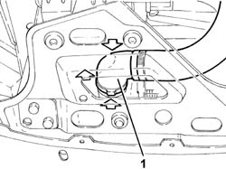
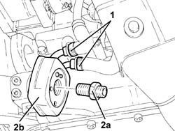

1084C10 engine oil heat exchanger - r + r
- Path
- Procedures > 10 ENGINE > 1084 ENGINE LUBRICATION SYSTEM > 1084C engine oil cooling circuit > 1084C10 engine oil heat exchanger - r + r
- Kind
- repair procedure (removal / refitting; the operation number is the code)
- Applies to
- engines: 1.6 TS, 2.0 TS; all production periods
- Interactive page
- https://sloeber94.github.io/elrnDB-a147/en/#/3024899
Applies to: engines: 1.6 TS; all production periods; only with equipment: 120 CV
 Removing
Removing
 Refitting
RefittingPosition the vehicle on the ramp.
Proceed with the removal 1084B30 engine oil filter r r .
1. Disconnect the lower coolant outlet hose from the radiator and drain the engine coolant.

Applies to: engines: 1.6 TS; all production periods; only with equipment: 120 CV
1. Loosen the coolant inlet and outlet hose bands from the engine oil heat exchanger.
2. Undo the pin (2a) and remove the engine oil heat exchanger (2b).

Applies to: engines: 1.6 TS; all production periods; only with equipment: 120 CV
Refitting
RemovingPlace the engine oil heat exchanger back in its housing and fix it using the pin.
Tighten the bands for the coolant inlet and outlet hose bands from the engine oil heat exchanger.
Connect the radiator coolant lower outlet hose and drain the engine cooling system.
Proceed with the refitting 1084B30 engine oil filter r r .
Refill the engine oil lubrication system 1084A10 ENGINE OIL - Check level and top up, if necessary .
Refill the engine cooling system 0010T20 coolant change .
Remove the car from the ramp.
Applies to: engines: 2.0 TS; all production periods
Removing
RefittingPosition the vehicle on the ramp.
Proceed with the removal 7055B54 under-engine guard - r r .
Proceed with the removal 1084B30 engine oil filter r r .
1. Disconnect the lower coolant outlet hose from the radiator and drain the engine coolant.
Applies to: engines: 2.0 TS; all production periods
1. Loosen the bands for the coolant inlet and outlet hoses from the engine oil heat exchanger.
2. Undo the pin (2a) and remove the engine oil heat exchanger (2b).

Applies to: engines: 2.0 TS; all production periods
Refitting
RemovingPlace the engine oil heat exchanger back in its housing and fix it using the pin.
Tighten the bands for the coolant inlet and outlet hoses from the engine oil heat exchanger.
Connect the radiator lower coolant oulet hose and drain the engine cooling system.
Proceed with the refitting 1084B30 engine oil filter r r .
Proceed with the refitting 7055B54 under-engine guard - r r .
Refill the engine oil lubrication system 1084A10 ENGINE OIL - Check level and top up, if necessary .
Refill the engine cooling system 0010T20 coolant change .
Remove the car from the ramp.
Topics linked from this page (4)
- 0010T20 coolant change
- 1084A10 ENGINE OIL - Check level and top up, if necessary
- 1084B30 engine oil filter r r
- 7055B54 under-engine guard - r r